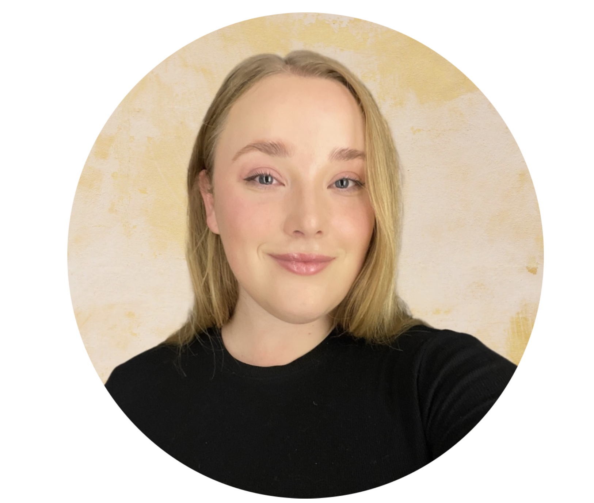

Om mig

Mit navn er Signe Madse, jeg er 25 og multimediedesign studerende fra Odense, msåke jeg er din fremtidige kollega/ansatte?
Igennem min uddannelse har vi praktisk erfaring med projektarbejde, arbejde med forskellige teknologier og brugergrænseflader. min passsion ligger indenfor web development, men derudover har jeg kursus i 3D print, og erfaring med flere forskellige programmer inden for grafik såsom illustarter, photoshop og lightroom.
Jeg ser mig selv som en positiv og åben person, jeg fungere godt- og elsker at arbejde i teams. at undbytte hiandens stærke sidder i teamet ligger mig meget naturligt i form af tidligere erfaring. Jeg har tidligere arbjedet i sunhedssektoren hvor teamarbejdet har været en essentiel del af hverdagen for at få dagene til at gå op. Jeg vil desuden beskirve mi selv som et empatisk ærligt menneske som er nem at være omkring. I min fritid er jeg vild med kreativitet i alle former, om det er en tur med kameraet, redigering af billeder, tegning, sygning eller noget helt andet. Jeg er altid klar på nye udfordringer og nyder at fordybe mig i mine interesser.
For fremtiden ser jeg mig selv som web develeper, at få lov til i samarbejde med klienten at realisere de visioner for deres tilstedeværelse online er en af mine store interesser, som jeg øsnker at dygtigere mig indenfor.
Igennem min uddannelse har vi praktisk erfaring med projektarbejde, arbejde med forskellige teknologier og brugergrænseflader. min passsion ligger indenfor web development, men derudover har jeg kursus i 3D print, og erfaring med flere forskellige programmer inden for grafik såsom illustarter, photoshop og lightroom.
Jeg ser mig selv som en positiv og åben person, jeg fungere godt- og elsker at arbejde i teams. at undbytte hiandens stærke sidder i teamet ligger mig meget naturligt i form af tidligere erfaring. Jeg har tidligere arbjedet i sunhedssektoren hvor teamarbejdet har været en essentiel del af hverdagen for at få dagene til at gå op. Jeg vil desuden beskirve mi selv som et empatisk ærligt menneske som er nem at være omkring. I min fritid er jeg vild med kreativitet i alle former, om det er en tur med kameraet, redigering af billeder, tegning, sygning eller noget helt andet. Jeg er altid klar på nye udfordringer og nyder at fordybe mig i mine interesser.
For fremtiden ser jeg mig selv som web develeper, at få lov til i samarbejde med klienten at realisere de visioner for deres tilstedeværelse online er en af mine store interesser, som jeg øsnker at dygtigere mig indenfor.